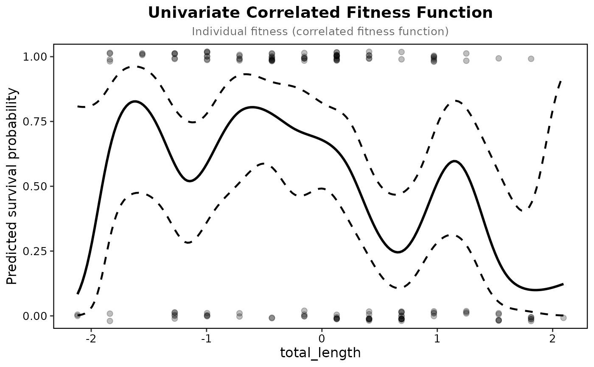
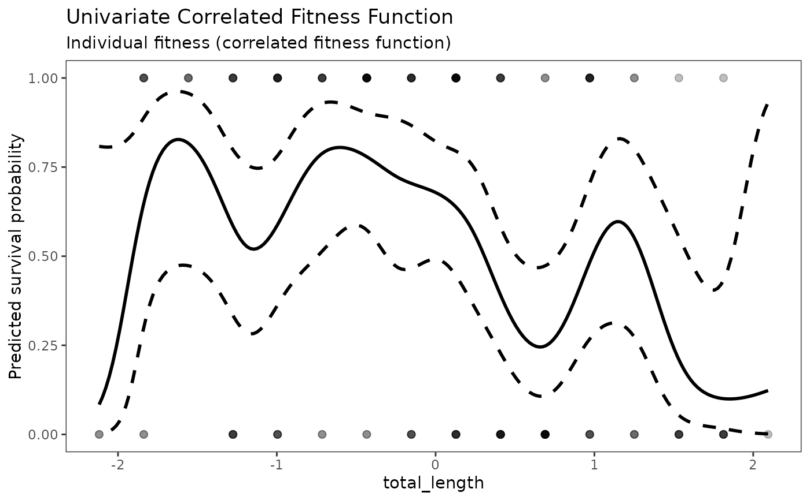

Plot Univariate Correlated Fitness Function
Source:R/plot_univariate_fitness.R
plot_univariate_fitness.RdVisualizes the univariate fitness function estimated via spline.
Usage
plot_univariate_fitness(
uni,
trait_col,
title = NULL,
show_points = TRUE,
point_alpha = 0.25,
ribbon_fill = NA,
ribbon_linetype = "dashed",
classic_plot = FALSE,
...
)Arguments
- uni
Output object of class
"univariate_fitness"fromunivariate_spline().- trait_col
Character string specifying the trait column name.
- title
Optional character string for the plot title.
- show_points
Logical indicating whether to show the original data points. Default is
TRUE.- point_alpha
Numeric value for point transparency. Default is 0.25.
- ribbon_fill
Color for the confidence interval ribbon. Default is
NA(transparent).- ribbon_linetype
Linetype for the confidence interval bounds. Default is
"dashed".- classic_plot
Logical; if
TRUE, draw the plain published style (a single dashed confidence outline, solid fit line, raw points, and a minimal theme). Default isFALSE.- ...
Additional arguments passed to
ggplot2::labs().
Examples
prep <- prepare_selection_data(bumpus, "survival", "total_length")
uni <- univariate_spline(prep, "survival", "total_length")
#> Fitness type detected: binary
#> IMPORTANT: Traits should already be standardized (mean = 0, SD = 1).
#> Do NOT apply scale() again within this function.
#> Trait appears standardized (mean ~ 0, SD ~ 1)
#> Warning: k = 10 may be too small for 'total_length' (mgcv k-index 0.84); try a larger k
plot_univariate_fitness(uni, "total_length")

plot_univariate_fitness(uni, "total_length", classic_plot = TRUE)
